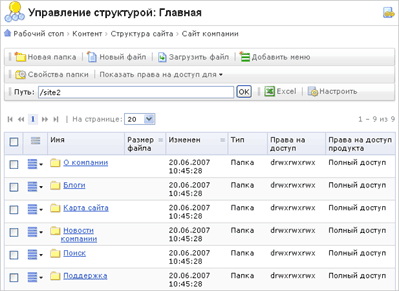

Управление структурой "1С-Битрикс: Управление сайтом" осуществляется в Менеджере файлов: Контент > Структура сайта. Менеджер файлов организован подобно правой панели Проводника Windows и представляет собой каталог папок и файлов, на верхнем уровне иерархии которого располагаются сайты, работающие под управлением системы и собственно система физических папок Файлы и папки.
Отличие между сайтами, работающие под управлением системы и папкой Файлы и папки заключается в том, что первые представляют - логические папки, а вторая - физические. Первые созданы для быстрого доступа к файлам обычных пользователей по логике структуры сайта. Вторые - для быстрого доступа к файлам для разработчиков сайтов.
В логической структуре отображаются не все физические файлы и папки, а только те, которым задан Заголовок (поле Заголовок) при создании страницы, раздела.
Верхний уровень каждого из сайтов имеет приблизительно такую структуру, как показано на рисунке.
Нажмите на рисунок, чтобы увеличить
Обычно веб-сайт подразделяется на разделы (Менеджером файлов разделы отображаются как папки), содержащие сгруппированные по тематике наборы файлов. Папки Менеджера файлов позволяют организовать структурированное хранение информации сайта: веб-страниц, шаблонов, фотографий и пр.
Информация об имени файла или папки, размере, дате последнего изменения, уровне прав доступа к файлу показаны в форме таблицы. Нажав на название папки (оно представлено в виде ссылки), можно перейти внутрь этой папки. C помощью двойного щелчка по названию файла, можно открыть данный файла для редактирования.
Служит для управления содержимым папки, а также настройки ее свойств.
| Кнопка | Описание |
|---|---|
| Новая папка | Создать новую папку в текущем каталоге. |
| Новый файл | Создать новый файл в текущей папке. |
| Загрузить файл | Загрузить файл в текущую папку с локального компьютера. |
| Добавить меню | Добавить меню в данный раздел. |
| Свойства папки | Просмотр и изменение свойств текущей папки (изменение заголовка раздела; управление правами доступа к разделу, а также значениями свойств страниц раздела). |
| Показать права на доступ для | Показать в колонке Права на доступ продукта уровень прав доступа к отображаемым файлам и папкам для выбранной группы пользователей.
См. также Права доступа |
| Путь | Чтобы перейти в определённую директорию сайта, укажите путь к папке в этом поле и нажмите кнопку OK. |
| Excel | Экспорт данных из отображаемой таблицы в формат MS Excel. |
| Настроить | Переход к диалогу настройки внешнего вида отчетной формы. |
| Поле | Описание |
|---|---|
| Колонка флажков | Выбор элементов, к которым предполагается применить какое-либо правило или действие. |
| Действия | Операции над папками:
Операции над файлами:
|
| Заголовок | Заголовок папки или файла. |
| Размер файла | Размер файла в байтах. |
| Изменен | Дата и время последнего изменения файла или папки. |
| Тип | Тип элемента списка:
|
| Права на доступ | Права доступа к файлам и папка на уровне операционной системы. |
| Права на доступ продукта | Права доступа к файлам и папка для выбранной группы пользователей. |
К каждому файлу и папке, отображаемым в Менеджере файлов, можно применить различные операции по изменению их расположения и свойств.
Чтобы осуществить любое из действий над файлами и папками, следует выделить требуемые файлы и папки флажками в крайнем левом поле менеджера файлов. После этого для выполнения операций можно воспользоваться командами в поле Действия, расположенном на панели управления внизу страницы.
Выберите нужное действие в списке и нажмите кнопку Применить.
| Действие | Описание |
|---|---|
| Доступ | Форма редактирования прав доступа к выбранным файлам и папкам. Для изменения прав доступа достаточно выбрать право для конкретной группы пользователей и сохранить изменения. |
| Копировать | Копирование выбранных файлов и папок в указанную в поле справа папку. Для выбора папки можно воспользоваться кнопкой |
| Перенести | Перемещение выбранных файлов и папок в указанную в поле справа папку. Для выбора папки можно воспользоваться кнопкой |
Меню текущего раздела показываются в Менеджере как файлы с именами вида Меню типа «ХХХ» (например, Меню типа «top»). Для того, чтобы перейти к редактированию меню, достаточно двойного клика по ссылке с его названием.
См. также Меню
| © «Битрикс», 2001-2008, «1C-Битрикс», 2008 | 1С-Битрикс: Управление сайтом |